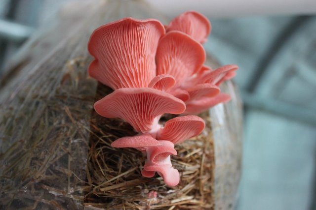
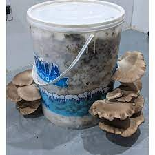

Girgolas (pleurotus ostreatus)
Conoce a fondo a este magnifico alimento que la naturaleza tiene para ofrecerte a ti
Estos hongos son caracterizados por sus coloridas variedades van a encantarte existen pardas, grises, rosadas y doradas y su cultivo es muy facil.

Aprende como se cultiva este maravilloso hongo que existe en todo el mundo
Cultivo hogareño de girgolas
Generalidades de su cultivo.
- Incubacion: 24°C aprox 20 dias
- Induccion: 10°C-15.6°C
- Desarrollo de basidiomas: 10-21 dias
Tipos de cultivos: existen dos tipos
- Cultivo en troncos (sustrato macizo)
- Cultivo en tachos (sustrato particulado)
Cultivo en troncos:

- cultivo estacional: explociones de productividad, requiere mejor planificacion
- cultivo a largo plazo: requiere unos tiempos de incubacion mucho mas largos
- sustratos disponibles: ver que troncos hay en tu zona o cuales puede conseguir mas facil
- permite el manejo de especies exoticas
Obejetivo: la produccion estacional de hongos. suele deshidratarselos para poder conservarlos para su consumo en el año
Cultivo en tachos:

- Produccion mucho mas estable y programada
- Tratamiento termico del sustrato: esterilizacion o pasteurizacion
Obejivo: la produccion estable de hongos para su consumo fresco.